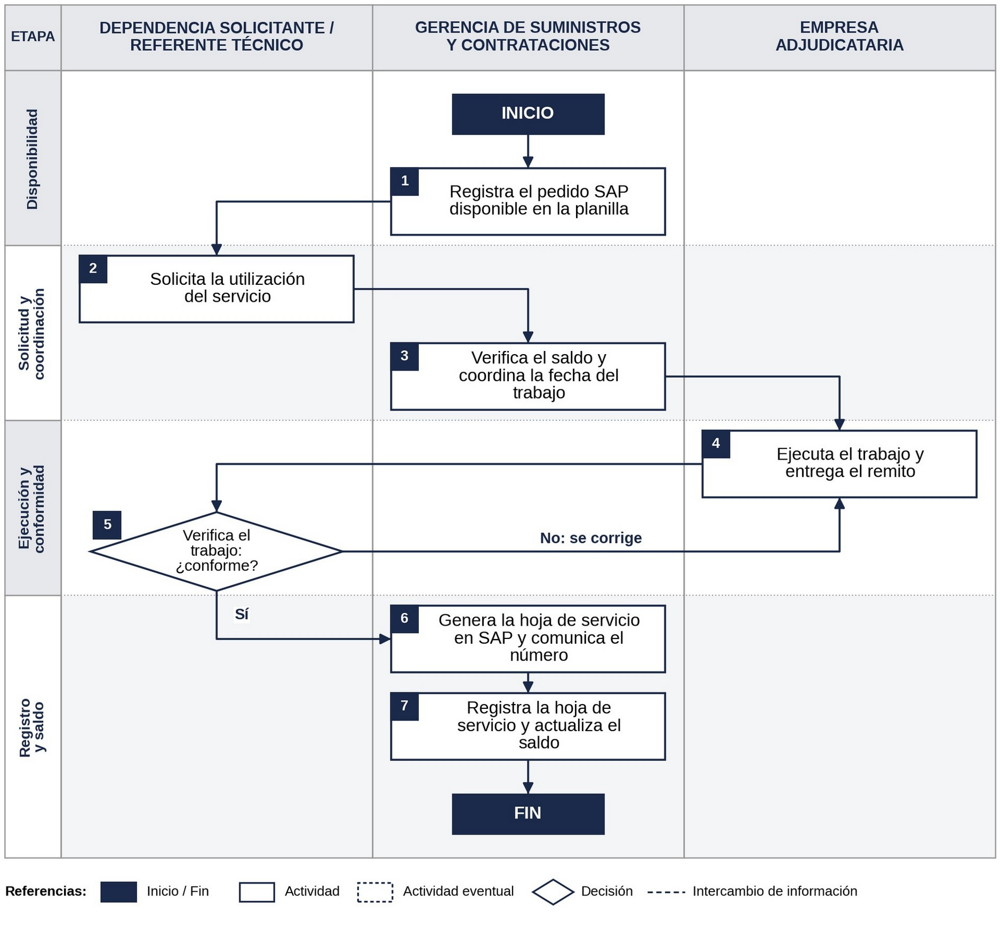

Utilización de servicios contratados con pedido SAP
Guía para que el uso de los servicios ya contratados siga siempre el mismo camino: pedido, coordinación, trabajo, conformidad, hoja de servicio y actualización del saldo.
- Responsable
- Gerencia de Suministros y Contrataciones
- Documento marco
- Protocolo de Actuación de Almacenes y Compras de Servicios Generales
- Quiénes intervienen
- Dependencia solicitante (o su referente técnico), Compras y empresa adjudicataria
- Empieza con
- El pedido SAP notificado a la empresa, con el servicio disponible para usar
- Termina con
- La hoja de servicio emitida en SAP y el saldo del pedido actualizado
- Registro oficial
- SAP (la planilla de seguimiento es auxiliar)
Cuando un servicio ya está contratado, no se llama directamente a la empresa: se pide a Compras, que verifica el saldo y coordina el trabajo.
- La dependencia solicitante pide el servicio, aporta la información técnica, acompaña el trabajo y da la conformidad.
- Compras controla el saldo del pedido, coordina con la empresa, genera la hoja de servicio y actualiza el saldo.
- La empresa hace el trabajo en la fecha coordinada y entrega el remito.
Así cada trabajo queda registrado y siempre se sabe cuánto queda disponible en cada pedido.
La contratación del servicio se rige por PR-01 o PR-02. La facturación y el pago no forman parte de esta guía. Para consultar el consumo de los servicios, ver Servicios contratados.
¿Quién hace qué?
Dependencia solicitante / referente técnico
- Pide el servicio: qué se necesita, dónde y con qué urgencia.
- Aporta la información técnica para coordinar el trabajo.
- Acompaña la ejecución, cuando corresponde.
- Verifica el trabajo y da la conformidad técnica, citando el remito.
- Indica las observaciones si el trabajo no está bien.
Pasos: 2 y 5
Compras (Gerencia de Suministros y Contrataciones)
- Orienta sobre cómo pedir un servicio.
- Registra los pedidos SAP disponibles en la planilla.
- Verifica el saldo y coordina la fecha con la empresa y la dependencia.
- Comunica a la empresa las observaciones, si las hay.
- Genera la hoja de servicio, comunica su número a la empresa y actualiza el saldo.
Pasos: 1, 3, 6 y 7
Empresa adjudicataria
- Hace el trabajo en la fecha coordinada.
- Entrega el remito con fecha, unidad y detalle de lo realizado.
- Corrige lo observado, según el contrato.
Pasos: 4
Cómo pedir un servicio
Enviá el pedido a Compras por correo institucional, con copia a tu jefatura, indicando:
- Qué servicio se necesita.
- En qué unidad-SIM.
- Equipo o matrícula, si corresponde.
- Urgencia.
Sumá toda la información técnica que ayude a coordinar el trabajo. Cuanto más contexto, mejor.
El botón abre tu correo con los datos a completar. Agregá en copia a tu jefatura.
Paso a paso
Los números coinciden con los del flujograma del procedimiento.
Etapa 1. Disponibilidad
Paso 1. Compras
Notificado el pedido SAP a la empresa, el servicio queda disponible. Registra en la planilla el número de pedido, la empresa y el monto.
Queda registrado: Pedido SAP; planilla
Etapa 2. Pedido y coordinación
Paso 2. Dependencia
Pide el servicio a Compras, con copia a su jefatura (ver «Cómo pedir un servicio»).
Queda registrado: Pedido de servicio
Paso 3. Compras
Verifica que el pedido tenga saldo, contacta a la empresa con el número de pedido SAP y coordina la fecha con la empresa y la dependencia.
Queda registrado: Planilla; SAP
Etapa 3. Trabajo y conformidad
Paso 4. Empresa
Hace el trabajo, con el acompañamiento de la dependencia cuando corresponde, y entrega el remito con fecha, unidad y detalle.
Queda registrado: Remito
Paso 5. Dependencia
Verifica el trabajo. Si está bien, envía la conformidad técnica a Compras citando el remito. Si no, envía las observaciones; Compras las comunica a la empresa para que corrija (vuelve al paso 4).
Queda registrado: Conformidad u observaciones
Etapa 4. Registro y saldo
Paso 6. Compras
Con la conformidad y el remito, genera la hoja de servicio en SAP y comunica su número a la empresa para que facture.
Queda registrado: Hoja de servicio (SAP)
Paso 7. Compras
Registra la hoja de servicio en la planilla y descuenta su monto del saldo del pedido.
Queda registrado: Planilla; SAP
Flujograma

Consejos útiles
- Primero la conformidad, después la hoja de servicio. La hoja se genera con la conformidad de la dependencia y el remito de la empresa (Protocolo, numeral 11).
- Conformidad a tiempo. Enviarla pronto evita demoras en la hoja de servicio y en la facturación.
- Si algo está mal, se dice en la verificación. Las observaciones se comunican a la empresa para que corrija según el contrato.
- El remito respalda el trabajo. La conformidad se da siempre con referencia a él.
- Por correo institucional. Pedidos, coordinaciones y conformidades por correo dejan constancia y evitan malentendidos.
- SAP es el registro oficial. Ante diferencias con la planilla, prevalece SAP y se corrige la planilla dejando constancia (Protocolo, numeral 3).
- Los datos sirven. Las fechas de pedido, trabajo y conformidad permiten conocer los tiempos y la calidad del servicio de cada empresa.
Términos útiles
Pedido SAP
Resultado de la contratación del servicio; habilita su uso una vez notificado a la empresa.
Remito
Documento de la empresa con la fecha, la unidad y el detalle del trabajo.
Conformidad técnica
Confirmación de la dependencia de que el trabajo se hizo bien (Protocolo, numeral 11).
Hoja de servicio
Registro en SAP de la recepción del servicio, que permite a la empresa facturar.
Saldo del pedido
Monto aún disponible del pedido SAP, descontadas las hojas de servicio emitidas.
Esta ficha es una síntesis. El procedimiento vigente es el PDF. Ante cualquier duda, escribí a comprasyalmacenes.suministros@imm.gub.uy.